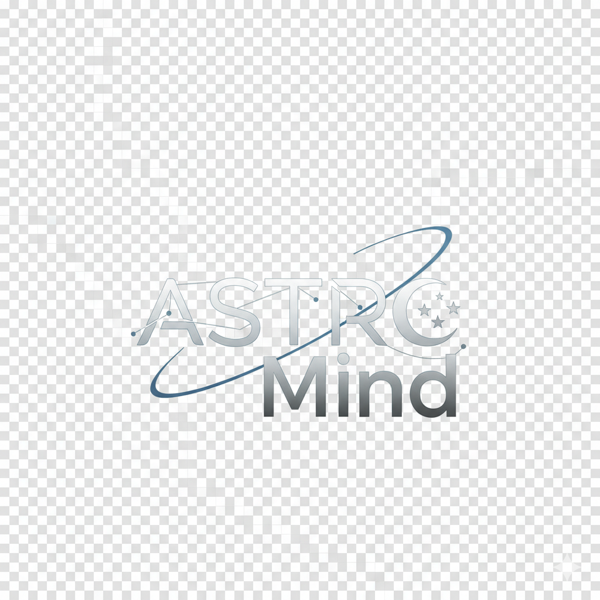
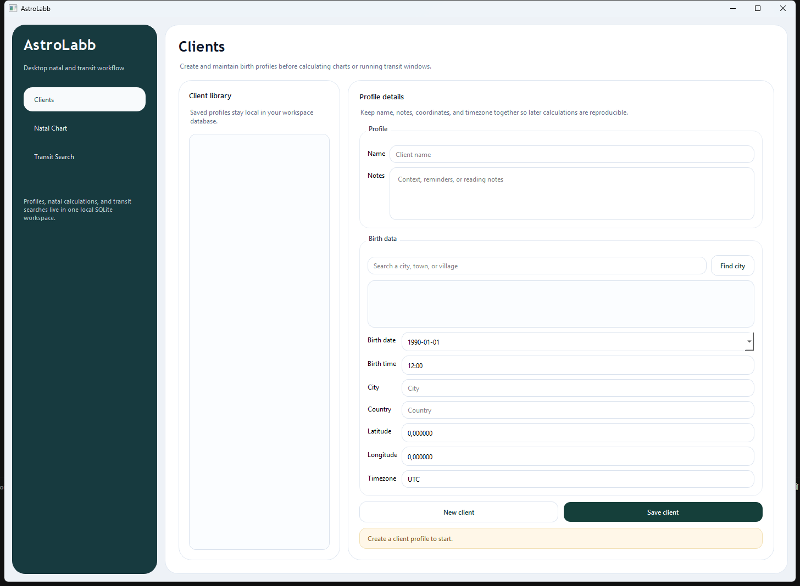

What You Can Do
- Save local client profiles with birth data and notes
- Search locations and fill coordinates plus timezone
- Calculate natal charts with planets, houses, and aspects
- Run transit-to-natal searches across date ranges
- Export charts to PNG

A Windows desktop app for client profiles, natal charts, transit searches, and chart export. Built for local use, clear workflows, and practical testing.
Download only: AstroLabb-<version>.exe
Ignore Source code (zip) and Source code (tar.gz) unless you want the raw repository files.

AstroLabb-<version>.exe fileMore info and then Run anywayPlease download it, test it, and report bugs or confusing behavior. Useful reports include screenshots, reproduction steps, and what you expected to happen.
AstroLabb is not code-signed yet. Because of that, Windows SmartScreen or your browser may warn that the executable is not commonly downloaded or not yet trusted.
If the file came from this repository's Releases page, you can continue with More info and then Run anyway.
The long-term fix is code signing. Until then, these warnings are expected for a small new Windows app.